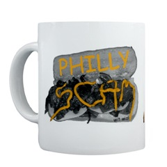

SCAM merchandise
The SCAM workshop has proudly produced imaginative and useful branded take away items as part of the workshop attendees package. There is already some evidence that these are becoming collectible items.
- In 2001 there was a SCAM Mug, which computed slices when filled.
- In 2002 in Montréal there was a bi-lingual biro and a tee-shirt.
- In 2003 in Amsterdam attendees were given an attractive AmstarSCAM glass.
- In 2004 in Chicago there was a blueSCAM thermal mug with a Saxophone logo for the ”S” of SCAM.
- In 2005 in Budapest, attendees were rewarded with a tasteful porcelain Danubius mug, in which the SCAM logo appears discreetly as the waters of the Danube.
- The 2006 merchandise is SCAM Mug - Philly CheeseScam wit wiz.
